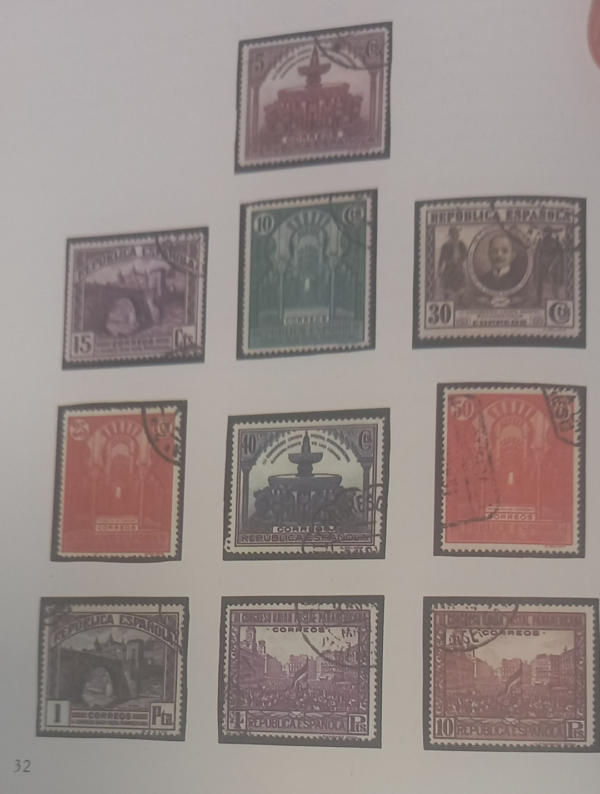
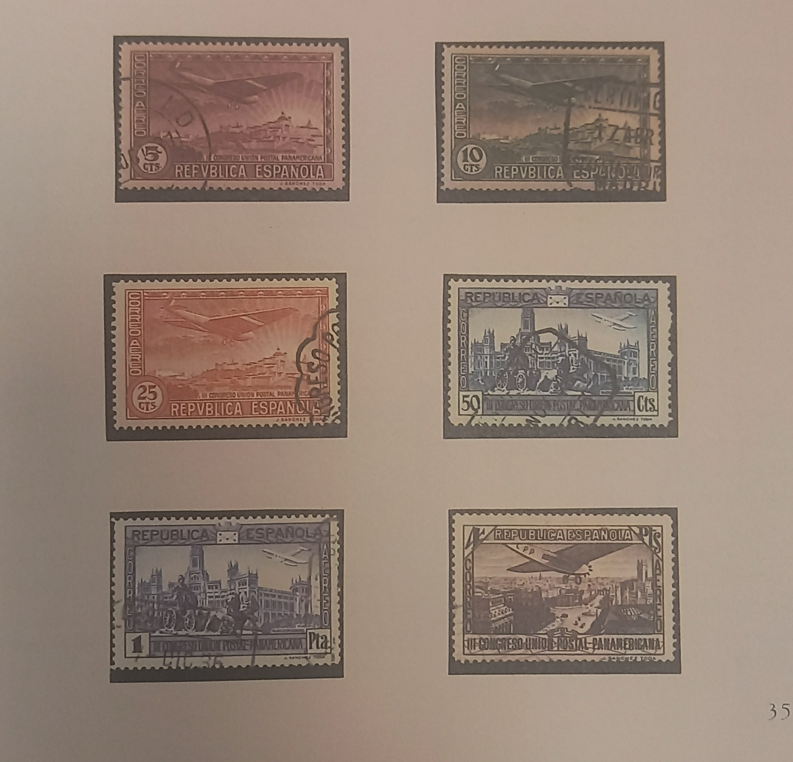
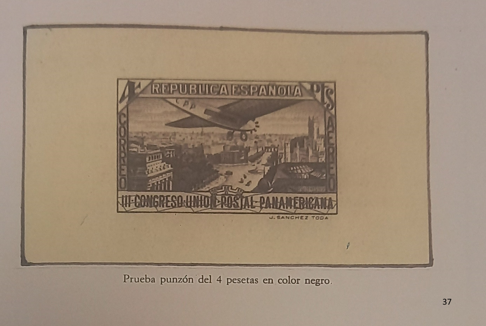

La celebración de este Congreso fue preparada con bastante antelación. Así vemos una Real Orden del tiempo de la Monarquía.
Illmo. Sr: S. M. el Rey (Q. D. G.) previo acuerdo del Consejo de Ministros, y de conformidad con lo propuesto por esa Dirección General ha tenido a bien disponer:
Illmo. Sr: De acuerdo con lo propuesto por esa Dirección general, he tenido a bien disponer,
1.º Que se reorganice la Comisión preparatoria del III Congreso de la Unión Postal Panamericana, creada por Real Orden de 16 de marzo último.
2.º Que dicha Comisión bajo la Presidencia de V. I., se componga de los Vocales siguientes: Señor Jefe de la Sección de Relaciones Culturales, como representante del Ministerio de Estado; Señor Secretario General del Patronato Nacional de Turismo, como representante de esta entidad; Señor Secretario General de este Ministerio; Señor Delegado en este Ministerio del Interventor General de la Administración del Estado; Señor Arquitecto de este Ministerio y señores Administrador de la Caja Postal de Ahorros, Inspector General de Correos, Administrador del Correo Central, Jefe del Negociado de Contabilidad, Jefe del Negociado de Servicios Internacionales, Habilitado de la Dirección General, y como Secretario de la Comisión el Segundo Jefe del aludido Negociado de Servicio Internacional.
3.º Que esa Comisión queda facultada para que en su día, y a medi- da que los acontecimientos precisen, solicite los fondos necesarios para hacer frente a los gastos que exija la celebración del susodicho Congreso, con cargo al crédito que al efecto se habilite, los cuales fondos serán facilitados por medio de libramientos a justificar.
2.º Que dicha Comisión bajo la Presidencia de V. I., se componga de los Vocales siguientes: Señor Jefe de la Sección de Relaciones Culturales, como representante del Ministerio de Estado; Señor Secretario General del Patronato Nacional de Turismo, como representante de esta entidad; Señor Secretario General de este Ministerio; Señor Delegado en este Ministerio del Interventor General de la Administración del Estado; Señor Arquitecto de este Ministerio y señores Administrador de la Caja Postal de Ahorros, Inspector General de Correos, Administrador del Correo Central, Jefe del Negociado de Contabilidad, Jefe del Negociado de Servicios Internacionales, Habilitado de la Dirección General, y como Secretario de la Comisión el Segundo Jefe del aludido Negociado de Servicio Internacional.
Lo que traslado a V. I. para su conocimiento y efectos oportunos.— Madrid, 28 de julio de 1931.—DIEGO MARTÍNEZ BARRIOS.—Sr. Director General de Comunicaciones.
Ilmo. Sr: Por orden de este Ministro, fecha 5 de junio último, se acordó una emisión de sellos de Correos, conmemorativa del Tercer Congreso de la Unión Postal Panamericana y coincidiendo esta emisión con otra acordada con anterioridad y en la fabricación de nuevos efectos timbrados en los que se sustituyen los emblemas de la Monarquía por los de la República y no pudiendo la Dirección General de Fábrica Nacional de la Moneda y Timbre, hacer esta estampación por procedi- miento calcográfico y sí solamente por el de litografía, procede relevar de esta labor a la expresada Dirección General, y sobrecargada por la elaboración ordinaria y la extraordinaria de los referidos efectos asegurando con ello la fabricación de los sellos de la emisión de que se trata, con objeto de que esté terminación en el mes de octubre, fecha de la celebración del Congreso de la Unión Postal Panamericana.
Al efecto este Ministerio ha acordado convocar a concurso entre las personas o entidades que tengan acreditada su capacidad en asuntos filatélicos y que garanticen el resultado artístico y económico de la emisión.
Madrid, 30 de julio de 1931.—P. D. VERGARA.—Sr. Director Gene- ral del Timbre.
Sin perjuicio del Convenio de la Unión Postal Internacional y con ob- jeto de mejorar la ejecución de los servicios postales, en Buenos Aires, se reu- nieron los representantes de los gobiernos de los países americanos con pode- res plenipotenciarios. En esta serie de reuniones se llegó el 15 de septiembre de 1921 a un acuerdo, siendo firmado entre ellos un Convenio. Posteriormente España fue invitada a adherirse al mismo. Esta adhesión se verificó por Real Decreto de 17 de marzo de 1924.
El segundo Congreso se realizó en Méjico en 1926 siendo ratificado por los siguientes países: Argentina, Bolivia, Brasil, Colombia, Costa Rica, Chile, Cuba, República Dominicana, Ecuador, El Salvador, España, Estados Unidos de Norteamérica, Guatemala, Honduras, Méjico, Panamá, Paraguay, Perú y Uruguay.
Entre los días 10 de octubre y 10 de noviembre de este año se celebró en Madrid el Tercer Congreso Postal Panamericano.
Con este motivo se puso en circulación una serie para el franqueo de la correspondencia ordinaria y otra para el franqueo de la correspondencia del correo aéreo. La primera consta de diez valores en los que se representan los siguientes motivos: La Fuente de los Leones, que se encuentra en el famoso patio del mismo nombre, sito en la Alhambra de Granada; una vista del Interior de la Mezquita de Córdoba; un Puente de Alcántara de la ciudad de Toledo; el retrato del iniciador de la Unión Postal Panamericana, el Dr. Francisco García Santos, y la Puerta del sol madrileña representando la escena propia de la proclamación de la República el día 14 de abril de este año.
La serie consta de diez valores que representan los siguientes motivos:

La Mezquita de Córdoba es el prototipo de la construcción árabe en España durante la época califal. Fue construida entre los siglos VIII al X, de- biéndose la parte más antigua al primero de los monarcas de la dinastía de Abderramán. Fue iniciada su construcción hacia el año 770. La configuración arquitectónica es mantenida por pilares que están rematados por dos tipos de arcos, unos de herradura y otros de medio punto. Todos los arcos se encuen- tran construidos combinando la piedra y el ladrillo, consiguiendo de este modo un enorme efecto decorativo.
Consta de once naves, separadas por las columnas a varias, poste- riormente, a pesar de su grandeza y tamaño, fue aumentada tres veces: La pri- mera lo hizo el sucesor en el trono Abderramán III, que prolongó las naves, la segunda por Al-Hakam II que le dio su mayor esplendor, haciendo que esta colosal construcción llegase hasta el río, y la tercera se debe a Almanzor que encorvando el río como límite para el ensanchamiento, se las arregló haciendo la ampliación hacia el este, en vez de hacia el sur como habían hecho sus antecesores.
En la actualidad este edificio se encuentra muy diferente de lo que fue en esa época de esplendor. Consta de 11 naves sostenidas por 850 columnas. Al paso del tiempo la ciudad fue conquistada por los cristianos (sufriendo en la lucha este edificio) a las órdenes del rey San Fernando y en el año 1236 este magnífico monumento del arte hispano musulmán fue transformado en Catedral.
La Alhambra de Granada constituye uno de los monumentos de esta época más hondo dentro del ambiente artístico universal. Es una ciudad-palacio fortificada, construida entre los siglos XIII y XIV. Su nombre significa castillo rojo. Fue utilizada como vivienda de los reyes moros y sus servidores, aparte de que constituía la fortaleza principal de la villa granadina de aquella época. Su estado de conservación nos permite observar un gran recinto rodeado de murallas, en cuyo extremo occidental se encuentra la Alcazaba, que constituía realmente la fortaleza, y separada convenientemente está la residencia real.
Esta residencia consta de dos palacios: uno en el Cuarto de Comares, residencia normal del monarca, que cuenta con el magnífico Salón de Embajadores; y el Cuarto de Los Leones, motivo principal del herraje que pertenece a la última época y fue destinado a estancia principal del harén. Las principales salas dentro del mismo son: La Sala de los Reyes, la de los Abencerrajes y las de las Dos Hermanas, encontrándose al final de la misma el celebrado mirador de Daraxa.
El primer morador de esta residencia-fortaleza fue Mohamed I, gracias al cual fue comenzada su construcción, y el último en habitarla fue Mohamed V.
La Mezquita de Córdoba es el prototipo de la construcción árabe en España durante la época califal. Fue construida entre los siglos VIII al X, debiendo la parte más antigua al primero de los monarcas de la dinastía de Abderramán. Fue iniciada su construcción hacia el año 770.
La configuración arquitectónica es mantenida por pilares rematados por dos tipos de arcos: unos de herradura y otros de medio punto. Todos los arcos se encuentran construidos combinando la piedra y el ladrillo, consiguiendo un enorme efecto decorativo.
Consta de once naves, que fueron aumentadas tres veces durante su construcción medieval. En la actualidad, este edificio consta de 11 naves sostenidas por 850 columnas. La ciudad fue conquistada por los cristianos en 1236, y el magnífico monumento del arte hispano musulmán fue transformado en Catedral.
La Alhambra constituye uno de los monumentos más destacados de la época medieval, profundamente enraizado en el ambiente artístico universal. Es una ciudad-palacio fortificada, construida entre los siglos XIII y XIV. Su nombre significa "castillo rojo".
La residencia consta de dos palacios: uno en el Cuarto de Comares (residencia normal del monarca) y otro en el Cuarto de Los Leones (destinado al harén). Las principales salas incluyen la Sala de los Reyes, la de los Abencerrajes y la de las Dos Hermanas, encontrándose al final el celebrado mirador de Daraxa.
El primer morador de esta residencia-fortaleza fue Mohamed I y el último fue Mohamed V.
Construido en el año 866 por los árabes, sobre un antiguo puente romano ya derribado, en una de las entradas a la ciudad de Toledo. En 1257 destruido por una gran avenida del Tajo, fue mandado reconstruir por Alfonso X. Fue restaurado en varias ocasiones durante los siglos XV al XIX.
De la estructura primitiva sólo conserva el arco más próximo a la ciudad, siendo el otro de estilo barroco, levantado en 1721. Tiene varias lápidas alusivas a las obras realizadas en el puente.
Enfrente, en una de las colinas que bordean el río se encuentra el Castillo de San Servando, que fue declarado monumento nacional por Real Orden del 26 de agosto de 1874, de Alfonso XII.
En tiempo de San Ildefonso fue basílica visigótica, siendo destruida en la guerra de los Cien Años. Restaurada en memoria de la victoria por Alfonso VI, le fueron añadidos torres, muros y un amplio foso para garantizar su defensa.
Fue destruido de nuevo por unas incursiones almorávides en el año 1110.
Fue entregado a los Caballeros del Temple por Alfonso VIII, para la conservación defensiva y militar que poseía la fortaleza al defender la ciudad de Toledo y el paso hacia el centro de la Península.
En 1380 fue reconstruido por voluntad del Arzobispo Tenorio, absorbiendo los restos del monasterio y formando un más vasto y suntuoso castillo que el existente, creado por los caballeros templarios.
La primera noticia escrita que se tiene de la Puerta del Sol data del año 1570, en la cual López de Hoyos dice que ha sido derribada la Puerta de Guadalajara, para ensanchar tan principal salida.
Hasta principios del siglo XVIII existía en la plaza una fuente, que fue sustituida por la de Diana, llamada la Mari-blanca, que se hizo famosa.
En 1876 se construyó la Casa de Correos, posteriormente dedicada a servir de alojamiento al Ministerio de la Gobernación, siendo obra del arquitecto don Jaime Marquet, tomándose como base los planos levantados por el arquitecto don Ventura Rodríguez.
En 1808 la Puerta del Sol comenzó a ser el eje central de la vida madrileña. En este año tuvo lugar la manifestación contra Murat y el enfrentamiento con los soldados franceses.
En este lugar se aplaudió a Fernando VII, después del Motín de Aranjuez, proclamándose la Constitución de Cádiz, siendo quemada la Puerta, cuando el Rey volvió del exilio.
Por ella entraron victoriosos Riego, Quiroga y Arco Agüero.
No hay palmo de tierra en toda la Plaza que en los diversos enfrentamientos armados: 1808, 1822, 1835, etc., no haya sido cubierto de sangre.

La serie emitida para el franqueo de la correspondencia por correo aéreo consta de seis valores que reproducen tres vistas de Madrid.
El primer motivo abarca una vista general de Madrid desde la famosa Pradera de San Isidro, desde la que se ve el Palacio Real, y las iglesias de San Andrés y San Francisco el Grande.
La segunda abarca la Plaza de la Cibeles, con su fuente en primer término, con el Palacio de Comunicaciones que se eleva detrás de ella; este Palacio fue construido durante el reinado de Alfonso XIII.
La Fuente de la Cibeles, hace conjunto con la Fuente de Neptuno. Fue colocada en la plaza en la que se encuentra en el centro, siendo centrada, en el año 1895. Es la diosa de la Tierra que marcha en un carro.
El proyecto es de Ventura Rodríguez, realizado hacia 1771 y fue esculpido por D. Francisco Gutiérrez, que talló la estatua, y Robert Michel los leones. Fue mandada su elaboración por el rey Carlos III.
La tercera vista tiene como principal motivo la amplia vía de la calle de Alcalá, que fue diseñada primitivamente como vía de comunicación extraurbana, siendo prolongada al realizarse la planificación del ensanche madrileño, constituyendo una de las principales arterias de la ciudad.
En esta calle destaca el edificio de la Academia de Bellas Artes de San Fernando. Se trata del Palacio de Goyeneche, realizado por Churriguera, en estilo barroco. Posteriormente el arquitecto Villanueva lo adecuó al estilo neoclásico, línea que actualmente conserva. Esta decisión es debida a la falta de local para la instalación de la Academia y se realizó por orden del rey Carlos III.
La vista abarca también a la Puerta de Alcalá, cuyo objeto de construcción fue el de conmemorar la entrada de Carlos III en la Corte, siendo subvencionada por los madrileños con el impuesto del vino, que se expendía en las tabernas de la Corte. Construida por Francisco Sabatini, es de estilo jónico, tiene la inscripción REGE CAROLO III.—ANNO MDCCLXVII, junto a la cual muestra el escudo de armas de España.
La realización de los grabados se debe a las manos de los grabadores de la Fábrica Nacional de la Moneda y Timbre y a uno de la Waterlow inglesa.
La serie de correo ordinario, en sus valores de 5, 10, 5, 30, 40 y 50 céntimos fueron realizados por Camilo Delhom; los de 15 céntimos y una peseta por Mr. Harrison y los de 4 y 10 pesetas por J. L. Sánchez Toda.
Los grabados y la ejecución de los sellos es muy parecida. Primero se hicieron los bocetos en acero que no portaban el valor, se sacaron pruebas en distintos colores, predominando el negro. Posteriormente los valores fueron añadidos, sacándose esta composición definitiva una prueba en negro y dado que cumplía los requisitos establecidos en la base del concurso, se hicieron una serie de pruebas en los colores que ya se habían designado para cada uno de los valores.

La serie de Correo aéreo fue grabada en acero por J. L. Sánchez Toda. Se presentaron tres grabados sin valor que representaban a los valores de toda la serie. De cada uno de ellos se hicieron pruebas en distintos colores, para posteriormente agregarles los valores y realizar una serie de pruebas de color en la que iba integrada la tonalidad ya dispuesta para cada valor.
La tirada fue efectuada en dos casas inglesas, la Waterlow and Sons efectuó la serie de correo ordinario mientras que la Wilkinson and Co. hacía la de correo aéreo. El papel utilizado fue el blanco y se les dio un dentado de 12 de línea.
El valor de cinco céntimos presenta las tonalidades castaño lila y castaño violeta; el 10 céntimos un tono pajizo; el 30 céntimos el verde oliva; el 40 céntimos el azul claro y el ultramar y en el 10 pesetas el castaño negruzco
En el correo aéreo se conocen las siguientes: un 5 céntimos castaño pajizo; un 10 céntimos verde claro; el 5 céntimos en tono rosáceo; el 50 céntimos azul claro y el 4 pesetas en tonalidad negro grisáceo.
Las series remitidas para el examen de la Comisión de Hacienda llevan la palabra ESPECIMEN taladrada diagonalmente así como la palabra MUESTRA en otras series. Aparte de estas sobrecargas, también se encuentra con la sobrecarga C.U.P.P.
Las dos series fueron emitidas también sin dentar siendo el número de su tirada de 3.000 ejemplares para la serie de correo aéreo y para los valores de 12, 30 y 40 céntimos de la serie ordinaria, de los restantes valores de la misma se imprimieron 2.000 de cada uno de ellos.
Ambas series fueron sobrecargadas con la sobrecarga OFICIAL, siendo destinadas al uso del Congreso y Senado, así como también de entidades oficiales, para el franqueo de la correspondencia.
Los tipos de letra usados en esta sobrecarga fueron distintos para las dos series, utilizándose el color azul y el rojo.
En la serie de correo ordinario se utilizó la sobrecarga en color rojo sobre los siguientes valores: 5, 10 y 40 céntimos y 1 y 10 pesetas, siendo usado el color azul en el resto de la serie.
En la de correo aéreo fueron sobrecargados en color rojo el 5 y 10 céntimos y el 1 y 4 peseta, y el azul en los otros dos valores.
Las sobrecargas fueron impuestas tanto en series dentadas como sin dentar; cometiéndose algunos errores a la hora de asignar los colores de las sobrecargas, encontrándose la serie completa de correo ordinario con la sobrecarga en color azul y en la serie aérea los valores de 5 céntimos y 4 pesetas también en azul.
Las series utilizadas para ser sobrecargadas tienen una tonalidad distinta de las series iniciales, aunque conservan el color base. Por ejemplo: el 5 céntimos de la serie original es de una tonalidad castaño oliva, mientras que el mismo valor sobrecargado es castaño amarillo, ocurriendo lo mismo para el resto de los valores de la serie.
A pesar de esta diferencia de color, también fueron cometidos errores pues se sobrecargaron algunos pliegos de las variedades de color de la serie base.
Lo mismo que la serie normal presenta las sobrecargas de ESPECIMEN, MUESTRA y C.U.P.P.
Correo ordinario:
Correo aéreo:
Sin dentar fueron emitidas 3.000 series para el correo aéreo y el mismo número para los valores de la serie ordinaria 15, 30 y 40 céntimos, siendo de 2.000 para el resto.
Las series sobrecargadas sin dentar apenas si circularon, como ocurrió con la serie dentada puesto que los congresistas y entidades oficiales utilizaron la otra serie, es decir la serie base.
Mostramos un bloque de cuatro de esta serie oficial sin dentar con matasellos especial preparado para el Tercer Congreso Postal Panamericano.